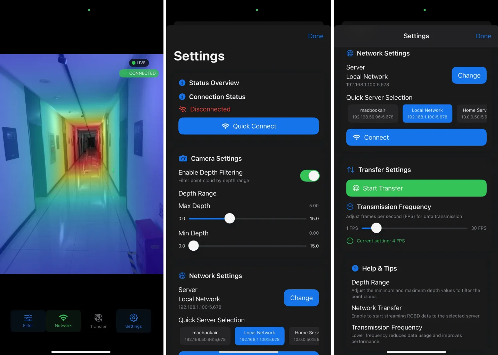

iLiDAR
An open-source iOS app for streaming synchronized LiDAR depth and RGB frames from an iPhone or iPad to a computer.

Overview
iLiDAR uses the LiDAR scanner on supported Apple devices as an RGB-D sensor. The iOS client captures depth and color frames and sends them over the local network to a Python receiver.
- Synchronized RGB and LiDAR depth capture
- Local Wi-Fi streaming over TCP
- Adjustable transmission frequency and depth range
- Output in JPG, BIN, and CSV formats
- Swift client and Python receiver released under the MIT License
Quick start
1. Install the iOS client
- Clone the repository and open
iLiDAR.xcworkspacein Xcode. - Select your development team and a connected iPhone or iPad with LiDAR.
- Build the app and allow Camera and Local Network access.
2. Start the Python receiver
git clone https://github.com/Galaxywalk/iLiDAR.git
cd iLiDAR/Server
conda create -n ilidar python=3.10 -y
conda activate ilidar
pip install -r requirements.txt
python ios_driver.py3. Connect the devices
Connect the phone and computer to the same Wi-Fi network. Enter the computer's local IP address in iLiDAR, tap Connect, and start the transfer. The receiver listens on TCP port 5678.
Output files
| Format | Content | Notes |
|---|---|---|
.jpg |
RGB frame | JPEG image |
.bin |
Depth map | 320 × 240, float16 |
.csv |
Camera parameters | One file per session |
Requirements
- An iPhone Pro or iPad Pro with a LiDAR scanner
- A Mac with Xcode for installing the iOS client
- Python 3.10 for the receiver
- Both devices connected to the same local network
The iOS Simulator does not provide the required LiDAR depth data. See Apple's supported device list.
More information
See the full tutorial for detailed setup and usage, or browse the source code on GitHub. iLiDAR is available under the MIT License.